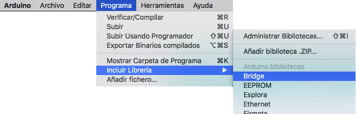

Circuitos de Interface con Arduino
Circuitos de Interface con Arduino
Conexión de un Diodo LED a una Salida de Arduino

Conexión de un Pulsador/Interruptor

Conexión de una Carga Inductiva de Alto Consumo Mediante un MOSFET

Conexión de una Salida Analógica a un LED

Entrada Analógica Mediante un Potenciómetro

Conexión de un Sensor de Tipo Resistivo (LRD, NTC, PTC..) a una Entrada Analógica
Conexión de un Servo a una Salida Analógica

Gobierno de un Relé Mediante una Salida Digital de Arduino
Gobierno de un Motor de CC Mediante una Salida Analógica de Arduino Controlando la Velocidad del Motor
Control de un Motor de CC Mediante el CI L293
Control de un Motor Paso a Paso Unipolar

Control Mediante Transistor TIP120
Volver al índice
Fun Tech Academy - Calle Alcobendas, 23 Leganés 28914 Madrid - www.funtech.academy